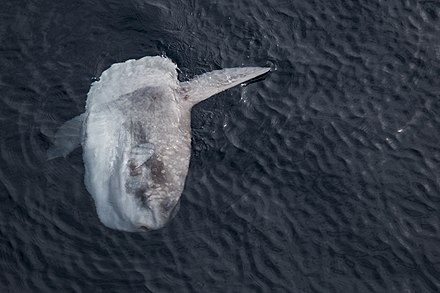

- diet
- history
- habitat
- friends
The ocean sunfish (Mola mola), also known as the common mola, is one of the largest bony fish in the world. It is the type species of the genus Mola, and one of five extant species in the family Molidae. It was once misidentified as the heaviest bony fish, which was actually a different and closely related species of sunfish, Mola alexandrini. Adults typically weigh between 247 and 1,000 kg (545 and 2,205 lb). It is native to tropical and temperate waters around the world. It resembles a fish head without a tail, and its main body is flattened laterally. Sunfish can be as tall as they are long when their dorsal and ventral fins are extended.
